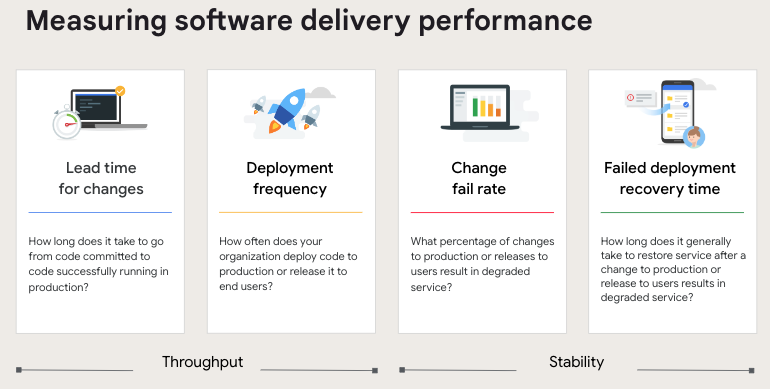
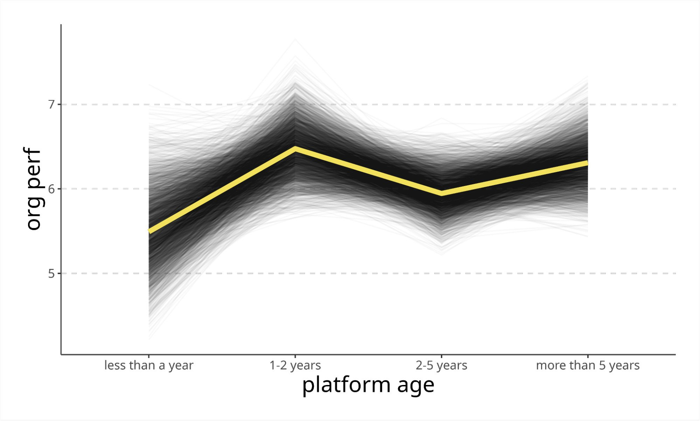

AI Is Rewriting the Rules of Software Development
Why developers and tech companies are moving from experimentation to reinvention 🤖
A concise editorial look at how AI is changing coding, developer workflows, team structures, hiring, and competitive advantage across the technology industry.

Artificial intelligence is no longer knocking on the door of software development. It is already inside the IDE, sitting in code review, drafting documentation, proposing tests, and quietly reshaping what it means to build software for a living.
For years, developer productivity was framed around frameworks, cloud infrastructure, and delivery pipelines. Now the center of gravity is shifting again. The biggest question is no longer whether AI will affect engineering teams. It is how deeply it will change the craft, the workflow, and the economics of the tech industry.
Key takeaways
Key Takeaways
- AI is becoming part of the default developer workflow, especially for code writing, summarization, explanation, and documentation.
- The real gain is not just faster typing. It is faster iteration, lower friction, and more time for architecture, collaboration, and product thinking.
- Trust remains the fault line: teams are adopting AI quickly, but many developers still doubt AI-generated output and want stronger review habits.
- The biggest winners in tech will not be the companies that simply add AI tools, but the ones that redesign workflows, governance, and team responsibilities around them.
1. From coding assistant to workflow layer
The first wave of AI in development looked deceptively simple: autocomplete on steroids. But that framing is already outdated.
Today, AI is being used across the software lifecycle: generating snippets, explaining legacy code, drafting pull request summaries, writing tests, proposing documentation, and accelerating debugging. In practice, this means the tool is no longer just helping developers write lines of code. It is helping them move through bottlenecks.
That distinction matters. Writing code has never been the only expensive part of software delivery. Context switching, handoffs, unclear documentation, repetitive refactoring, and slow reviews often consume more energy than the actual implementation itself.
AI is most valuable when it removes friction around the work, not just when it writes the work.
A useful way to think about the shift is this:
| Then | Now |
|---|---|
| AI as autocomplete | AI as an embedded workflow partner |
| Focus on faster coding | Focus on faster iteration and decision support |
| Individual productivity | Team-level leverage |
| Tool adoption | Operating model redesign |
2. Developers are moving faster—but not blindly
The optimistic case for AI is easy to see. Developers can prototype faster, explain unfamiliar code more easily, and spend less time on low-leverage tasks. Junior engineers can move with more confidence. Senior engineers can offload repetitive work and spend more energy on systems thinking.
But speed is only half the story.
The other half is judgment. AI can produce convincing code that is incomplete, insecure, or misaligned with business context. That is why the next premium skill in engineering is not just code generation. It is code evaluation.
In many teams, the developer role is shifting from pure author to editor, orchestrator, and reviewer. The strongest engineers will increasingly be the ones who can:
- ask precise questions
- spot weak assumptions quickly
- validate output against architecture and product intent
- maintain quality when the pace accelerates
This is not the end of craftsmanship. It is the start of a more compressed feedback loop.
3. The tech industry is reorganizing around AI-native teams
The wider technology industry is now learning the same lesson developers are learning locally: AI creates value only when organizations adapt around it.
Adding a chatbot to the stack is easy. Rewiring the company is hard.
AI-native organizations are starting to rethink several things at once:
- how teams document and share internal knowledge
- where human review is mandatory
- which tasks should be accelerated, and which should remain deeply manual
- what new roles are needed around governance, platform enablement, and model operations
- how product teams can ship faster without increasing operational fragility
This is why the impact of AI is broader than engineering efficiency. It reaches hiring, org design, security, procurement, training, and competitive strategy.
A simple comparison shows the shift:
| Area | Traditional tech org | AI-native tech org |
|---|---|---|
| Knowledge | Scattered across docs and people | Structured for machine + human retrieval |
| Delivery | Linear handoffs | Iterative, assisted, parallelized |
| Quality control | Mostly after implementation | Continuous review with human checkpoints |
| Hiring focus | Tools and stack familiarity | Judgment, adaptability, systems thinking |
| Competitive edge | More engineers, more output | Better workflows, better decisions, faster learning |
4. The paradox: more productivity, more pressure
One of the most important truths about AI in development is that it creates a paradox.
On one hand, teams can move faster. On the other, expectations rise just as quickly.
When prototyping becomes cheaper, roadmaps expand. When drafting gets easier, quality standards rise. When code can be generated in seconds, differentiation shifts upward—to architecture, taste, security, reliability, and customer understanding.
This means AI may not reduce the importance of developers. It may raise the bar for what valuable developers do.
The industry will likely split into three groups:
- teams that use AI casually and get incremental gains
- teams that standardize it and gain meaningful productivity
- teams that redesign their operating model and create compounding advantage
The third group is where the real transformation happens.
What developers should do next
- Learn how to prompt with precision
- Treat AI output as draft material, not truth
- Strengthen review, testing, and security practices
- Build domain knowledge that AI cannot fake
- Get comfortable with architecture, trade-offs, and product context
- Assume the old definition of "developer productivity" is enough
Conclusion
AI is not replacing the world of development. It is reshaping its center of gravity.
The developers who thrive will not be the ones who resist AI, nor the ones who trust it blindly. They will be the ones who learn to work with it while preserving rigor, context, and taste.
And for the tech industry, the same rule applies at company scale. The future belongs less to organizations that merely deploy AI tools, and more to those that redesign how work happens around them.
That is the real story: AI is not just speeding up software development.
It is changing what great development looks like.
Further Reading
- GitHub research on AI in software development teams
- Stack Overflow 2024 AI survey results
- Google DORA research on AI-assisted software delivery
- McKinsey research on AI adoption and organizational redesign
- World Economic Forum research on jobs and skills through 2030
How did this post make you feel?
Pick one reaction:

